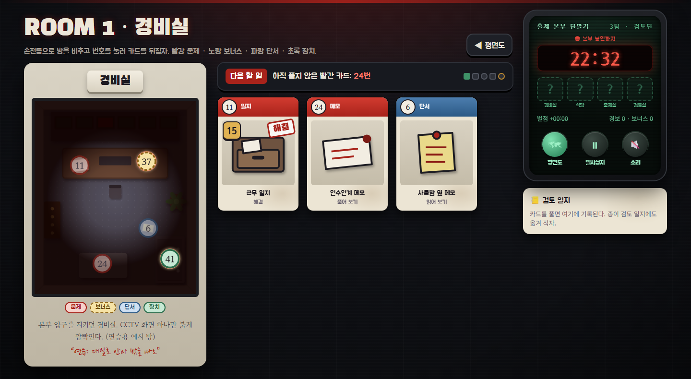
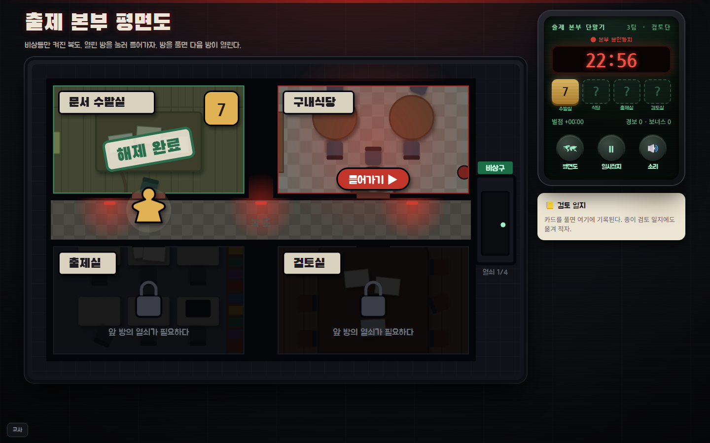
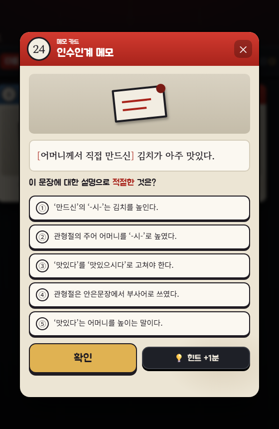
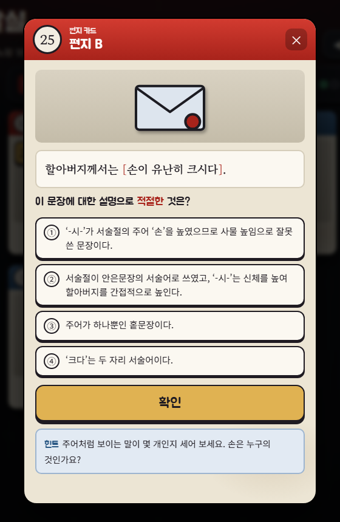
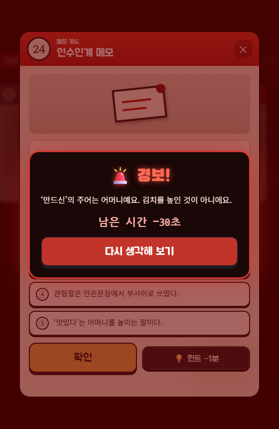
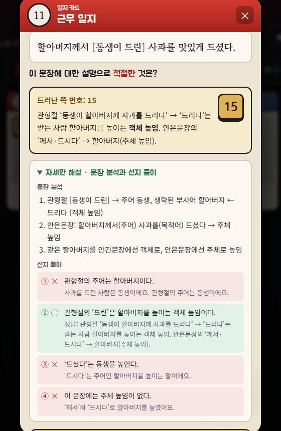
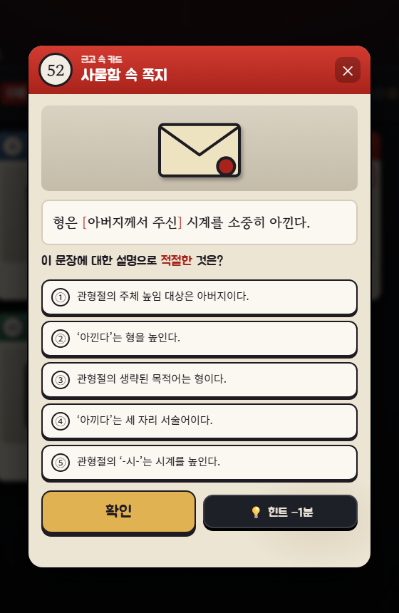
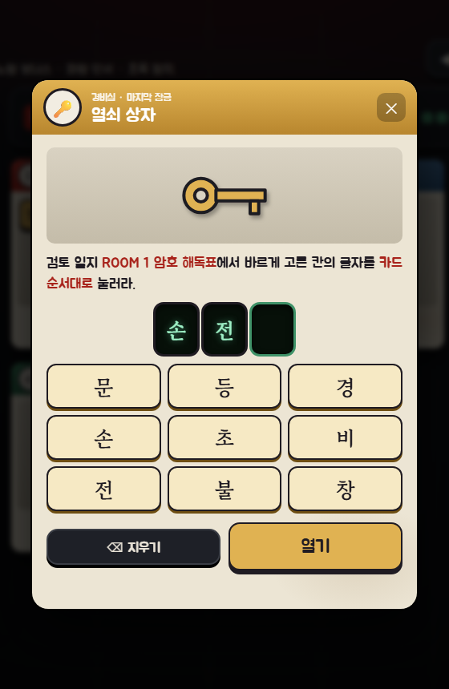
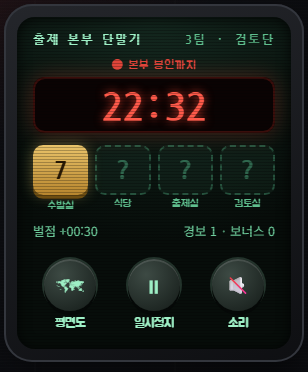

교과서 107쪽
문장의 짜임
높임 표현
화법과 언어 · 3. 문장과 담화, 국어의 변화
높임 표현,
문장에 적용해 보기
(1) 문장의 짜임과 문법 요소 · 3차시
교과서 107쪽으로 점검
어떤 방법으로, 어느 등급의 상대 높임?

상대 높임은 주로 종결 어미로 실현된다 → 문장 끝을 보면 등급이 보여요!
교과서 107쪽으로 점검
㉠ ‘말씀해 주시기 바랍니다’를 바꾸어 보면?
의문문
말씀해 주시겠습니까?
상대에게 선택의 여지 → 간접적이고 부드럽게
명령문
말씀해 주십시오.
행동을 바로 요구 → 직접적이고 강하게
1차시 기억나요? “창문 좀 열어 줄 수 있니?” → 형식은 의문문, 기능은 요청!
팀 편성
여섯 팀으로 앉고, 팀 이름 정하기
4~5명씩 여섯 팀
자리표대로 앉아요.
팀 번호는 1~6팀!
팀 이름 하나
팀원 모두가 동의한
이름을 정해요.
준비물 받기
팀마다 태블릿 한 대,
활동지는 한 사람에 한 장.
팀 이름은 오늘 수업 끝까지 기록에 남아요. 신중하게!
화법과 언어 · 3. 문장과 담화, 국어의 변화
출제 본부
탈출
높임 표현 × 문장의 짜임 · 3차시
자정이 지나면, 이곳은 봉인된다.
상황 안내
23:40 · 수능 출제 본부
갑자기 정전이 됐다. 붉은 비상등만 켜진 복도.
보안 시스템이 다시 켜지는 자정 10분이 되면,
본부는 시험이 끝날 때까지 봉인된다.
여러분은 남아 있는 마지막 검토위원.
먼저 사라진 검토위원의 책상에서 쪽지가 나왔다.
23:52. 복도 불이 또 나갔다. 출제실 문은 밖에서 잠겨 있고, 경비실은 전화를 받지 않는다.
방금 누가 계단을 내려갔다. 나는 아니다.
역할 나누기
남은 검토위원, 각자 맡을 일
단말기 담당 1명
태블릿을 조작해요.
팀이 합의한 답만 누르기!
검토위원 모두
빨간 카드를 나눠 풀고
근거를 말로 설명해요.
검토 일지 각자
카드를 풀면 암호 해독표에 ○.
열쇠 상자 글자가 여기서!
팀원 모두가 동의해야 장치에 숫자를 넣는다. 혼자 누르면, 경보가 울린다.
게임 방법 1/9 · 탈출 순서
네 방을 차례로 열고, 열쇠 숫자 네 개로 비상구를 연다
1
🚪
방에 들어가기
평면도에서 열린 방을 누른다. 앞 방을 풀어야 다음 방이 열린다.
›
2
11
문제 카드 2장
문장을 분석해 맞히면 번호가 드러난다.
›
3
6
단서 찾기
장치를 여는 계산법(더하기·빼기)이 적혀 있다.
›
4
41
장치 열기
두 번호를 계산해 비밀번호를 넣는다.
›
5
🔒
금고 속 서류
장치 안에서 나온 마지막 문제까지 푼다.
›
6
🔑
열쇠 상자
검토 일지 해독표의 글자 3개로 연다. → 열쇠 숫자
× 4방
보안 검색실 → 구내식당 → 출제실 → 검토실
마지막에 비상구에 열쇠 숫자 4개를 방 순서대로 넣는다.
필수 12문항 (방마다 3문항) · 제한 30분
노란 보너스 4문항은 선택: 맞히면 기록 −30초
게임 방법 2/9 · 화면 보기
평면도 → 방 → 카드, 화면은 세 단계예요
연습용 예시 화면 · 실제 게임에 없는 방(경비실)

2
3
4
5
6

1
① 평면도 · 열린 방을 누르면 말이 걸어가 들어간다.
② 방 그림 · 손전등을 움직여 번호 동그라미를 찾아 누른다.
③ 다음 할 일 · 지금 할 일을 띠가 알려 준다.
④ 책상 · 찾은 카드가 놓인다. 다시 눌러 다시 보기.
⑤ 단말기 · 남은 시간, 열쇠 칸, 벌점.
⑥ 검토 기록 · 푼 카드가 저절로 쌓인다.
게임 방법 3/9 · 동그라미 색
무엇을 눌렀는지는 동그라미 색으로 알 수 있어요
11
문제 (필수)
방마다 2장 + 금고 속 서류 1장.
수능형 문장을 분석해 맞히면 번호가 드러나요.
37
보너스 (선택)
방마다 1장. 안 풀어도 탈출할 수 있어요.
맞히면 기록 −30초, 틀리면 경보는 똑같이!
6
단서
문법 메모와 함께 장치 계산법이 숨어 있어요. 읽기만 하면 끝.
41
장치
금고·경보기 같은 잠금 장치.
번호를 더하거나 빼서 비밀번호를 넣어요.
이미 연 동그라미는 흐려져요. 방 그림 아래에 색 안내표가 있어요.
빨간 동그라미를 다 풀어야 장치가 열려요. 단서 없이 숫자를 넣으면 경보가 울립니다.
게임 방법 4/9 · 문제 카드 풀기
문장을 뜯어 보고, 팀이 합의한 답만 누른다
연습용 예시 화면 · 실제 게임에 없는 방(경비실)

1
문장을 읽는다
[ ] 대괄호 = 안긴문장. 높임은 대괄호 안과 밖을 따로 따져요.
2
선지를 고른다
“이 문장에 대한 설명으로 적절한 것은?” 하나를 골라요.
3
근거를 말하고 ‘확인’
팀원 모두 동의했을 때만 눌러요. 맞히면 검토 일지 해독표에 ○!
💡
막히면 힌트
두 번 눌러야 열려요. 기록 +1분. 카드마다 한 번.

게임 방법 5/9 · 틀리면, 맞히면
틀리면 경보, 맞히면 번호와 자세한 해설
연습용 예시 화면 · 실제 게임에 없는 방(경비실)

🚨 틀리면
화면이 붉게 번쩍이고 경보가 울려요.
기록 +30초.
왜 틀렸는지 한 줄 단서가 나와요. 다시 생각해서 고르면 돼요.

✔ 맞히면
번호가 드러나요. (장치 비밀번호 재료)
자세한 해설: 문장 분석 + 선지 ①~④가 왜 ○, 왜 ×인지.
해설을 함께 읽고 넘어가기!
게임 방법 6/9 · 연습 방 예시
번호 + 단서의 계산법 = 장치 비밀번호
연습용 예시 화면 · 실제 게임에 없는 방(경비실)
11 근무 일지
문장을 분석해 맞히면
쪽 번호 15
+
24 인수인계 메모
문장을 분석해 맞히면
메모 번호 28
=
41 사물함
6번 단서 ‘사물함 옆 메모’:
쪽 번호 + 메모 번호
43
→
방마다 계산법이 달라요
더하기인지 빼기인지는 그 방의 단서 카드에만 있어요. 단서를 먼저 찾기!
비밀번호가 틀리면 경보
빨간 카드를 다 풀었는지, 계산을 맞게 했는지 다시 확인해요. 기록 +30초.
게임 방법 7/9 · 금고 속 서류와 열쇠 상자
마지막 잠금은 종이에 있다: 검토 일지의 암호 해독표
연습용 예시 화면 · 실제 게임에 없는 방(경비실)

검토 일지 · 암호 해독표 (연습용 경비실)
11
근무 일지
‘드셨다’가 높이는 사람
할아버지손동생창사과문
24
인수인계 메모
[ ] 안긴문장의 종류
명사절경관형절전인용절비
52
🔒 사물함 속 쪽지
‘주신’의 생략된 목적어
형초시계등아버지불
○한 칸의 글자를 위에서부터 → 손 전 등

→
카드를 맞힐 때마다 그 줄의 해독표에 ○ → 상자에 글자를 순서대로 누르면 열쇠 숫자와 그 방 정리표가 나와요. 글자가 틀리면 경보 +30초.
게임 방법 8/9 · 단말기와 기록
기록 = 걸린 시간 + 벌점 − 보너스
연습용 예시 화면 · 실제 게임에 없는 방(경비실)

1
2
3
4
① 남은 시간 · 봉인까지 30분. 5분 아래로 내려가면 심장 소리가 들려요.
② 열쇠 칸 · 방을 하나 풀 때마다 열쇠 숫자가 채워져요.
③ 벌점 · 경보·힌트·보너스 횟수가 바로 보여요.
④ 버튼 · 평면도로 가기 · 일시정지(선생님이 말할 때만) · 소리 켜고 끄기
🏆 시상 세 가지 (관리자 기록으로 자동 집계)
최단 탈출 · 경보 최소 · 보너스 왕
30분이 지나도 멈추지 않고 초과 시간이 기록돼요.
게임 방법 9/9 · 이럴 땐 이렇게
막혔을 때 먼저 볼 것
장치가 안 열려요
빨간 카드 2장을 다 풀었나요?
단서 카드의 더하기·빼기를 다시 확인!
다음에 뭘 하죠?
위쪽 ‘다음 할 일’ 띠를 읽어요. 남은 카드 번호까지 알려 줘요.
열쇠 상자가 안 열려요
검토 일지 해독표를 한 줄씩 다시! 글자는 위에서부터 차례로.
3분 넘게 막혔어요
💡 힌트(+1분)를 보거나 손을 들어요. 선생님이 관리자 화면에서 도와줄 수 있어요.
화면이 멈췄어요
선생님이 모든 팀을 멈춘 거예요. 앞 화면을 봐요. 시간도 멈춰 있어요.
창을 닫아 버렸어요
같은 기기로 같은 주소를 다시 열면 이어서 할 수 있어요.
기기는 팀에 한 대. 누르기 전에, 팀원 모두가 근거에 동의할 것.
접속
단말기를 켜세요
① 태블릿으로 QR을 찍는다
zet18034.github.io/zet18034/honorific-lesson-3/escape/
② 팀 번호(1~6)를 고르고 팀 이름을 정한다
③ ‘손전등을 켠다’는 선생님 신호에 맞춰 누른다
관리자 미연결: 기록 없이 진행됩니다
● 본부 봉인까지
30:00
손전등을 켜라!
방탈출 · 필수 12문항 · 30분 · 먼저 탈출한 팀은 노란 보너스 카드에 도전
지금 경보가 가장 많이 울리는 문제 (실시간)
🚨 관리자 연결 전
관리자 페이지를 연결하면 팀들이 가장 많이 틀리고 있는 문제가 여기에 나타납니다.
기록 확인 및 시상
누가 가장 먼저 빠져나왔나
최종 기록 = 걸린 시간 + 경보·힌트 벌점 − 보너스 (관리자 페이지 기록으로 자동 표시)
오답 TOP 1 · —
가장 많이 틀린 문제
—
오답 TOP 2 · —
두 번째로 많이 틀린 문제
—
오답 TOP 3 · —
세 번째로 많이 틀린 문제
—
화자의 태도
문법 요소를 골라 쓰면, 태도가 드러나요
문장 종결 표현
평서·의문·명령·청유·감탄
형식과 실제 의도는 다를 수 있어요
높임 표현
주체 · 객체 · 상대
안긴문장 안과 밖에서 따로!
담화 맥락
누구에게, 어떤 자리에서?
→ 골라 쓴 표현에
화자의 태도가 드러나요
[12화언01-05] 담화의 맥락에 적절한 어휘와 문법 요소를 선택하여 화자의 태도를 드러낸다.
출구 카드
비상구를 나가기 전에
둘
누구에게, 어떤 자리에서
말하느냐에 따라 높임이
달라진 예 하나
검토 일지 맨 아래를 잘라 내고 나가기 ✂
문장 종결 표현
높임 표현
화자의 태도
세 시간의 마지막 인사
그동안
고마웠어요
세 시간 동안 수업을 잘 들어 주고,
오늘 끝까지 탈출해 준 여러분 덕분에 즐거웠습니다.
모두 본부 탈출 성공!